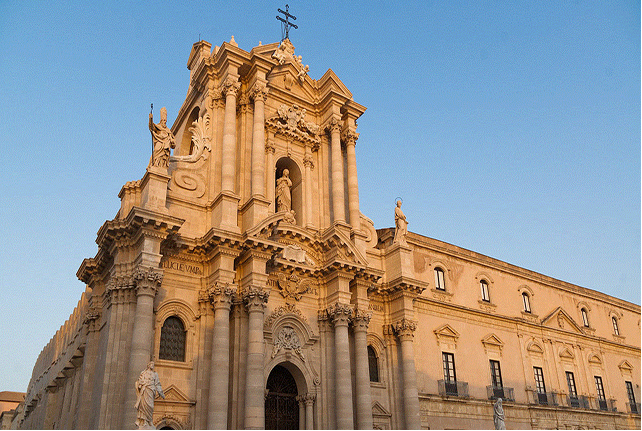
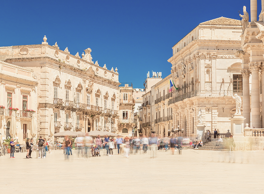
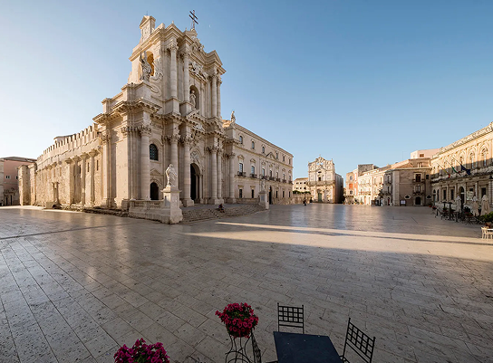
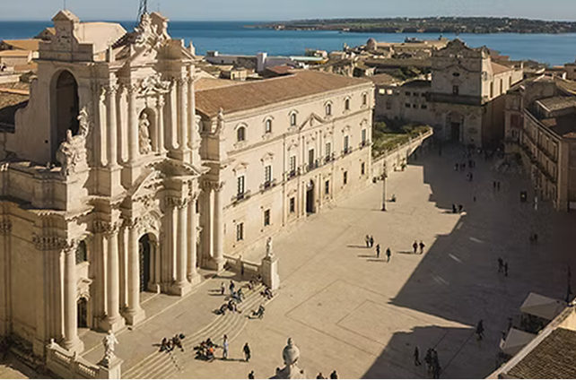

tra grecia e sicilia
Piazza Duomo è il cuore dell’isola di Ortigia, centro storico della città di Siracusa. Elegante e luminosa, è considerata una delle piazze più belle della Sicilia. Qui si respira un’atmosfera ricca di storia, arte e tradizione. La piazza è dominata dal magnifico Duomo di Siracusa, costruito sui resti di un antico tempio greco dedicato ad Atena. Le colonne doriche dell’antico tempio sono ancora visibili nella struttura della cattedrale, creando un affascinante incontro tra epoche diverse. Intorno alla piazza sorgono splendidi palazzi barocchi, come il Palazzo Beneventano del Bosco, che contribuiscono a creare un insieme architettonico armonioso e suggestivo.
Le facciate chiare brillano alla luce del sole, rendendo lo spazio ancora più affascinante. Durante il giorno, Piazza Duomo è animata da turisti e abitanti che passeggiano tra i caffè e i locali all’aperto. È un luogo di incontro e di relax, dove si può ammirare la bellezza dei monumenti in un’atmosfera tranquilla. La sera, l’illuminazione mette in risalto i dettagli barocchi della cattedrale e dei palazzi circostanti. Oltre agli edifici principali, Piazza Duomo è costellata di angoli pittoreschi, con vicoletti e scorci che raccontano la vita quotidiana degli abitanti di Ortigia.


arte, eleganza e vita in piazza Duomo
Le piccole botteghe artigiane, i negozi di prodotti tipici e i caffè storici contribuiscono a rendere la piazza un luogo vivace e accogliente, dove tradizione e modernità convivono armoniosamente. Passeggiare tra questi spazi permette di scoprire dettagli architettonici nascosti e piccole opere d’arte spesso trascurate dai percorsi turistici più convenzionali. La piazza è anche un importante centro culturale e sociale: durante l’anno ospita concerti, eventi artistici e manifestazioni religiose, diventando un punto di riferimento per cittadini e visitatori.
Le celebrazioni tradizionali, come la festa di Santa Lucia, trasformano Piazza Duomo in un palcoscenico animato, dove storia, fede e folklore si intrecciano. Questo continuo alternarsi di momenti di tranquillità e di vivace partecipazione fa della piazza un luogo che pulsa di vita e di emozioni. Infine, Piazza Duomo non è solo un monumento da ammirare, ma un vero e proprio spazio di esperienza sensoriale.
